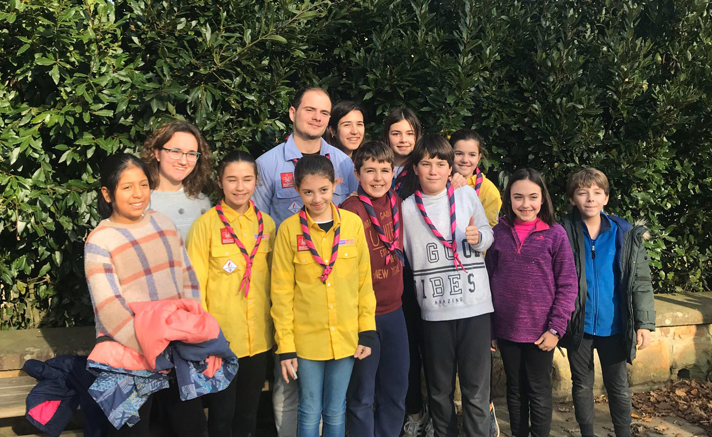

El Grupo Scout Nuestra Señora del Huerto, residente en el colegio pamplonés bajo el mismo nombre de la Congregación de las Hijas de María Santísima del Huerto.
Tras la refundación de Scout de Navarra - MSC, este Grupo es fundado en dicho colegio en octubre de 2017 con el apoyo tanto de las Hermanas como del Capellán del colegio. Los colores de su pañoleta son el azul y el rosa.
Habitualmente, desarrollan sus actividades los sábados por la tarde, de 16:30h a 18:30h.
Puedes encontrarnos en el Colegio Nuestra Señora del Huerto de Pamplona (C. Monasterio de Urdax, 25) preguntando por nosotros.
También puedes contactarnos llamando al teléfono del colegio, el 948 252 354, o a través del correo scout@nshuerto